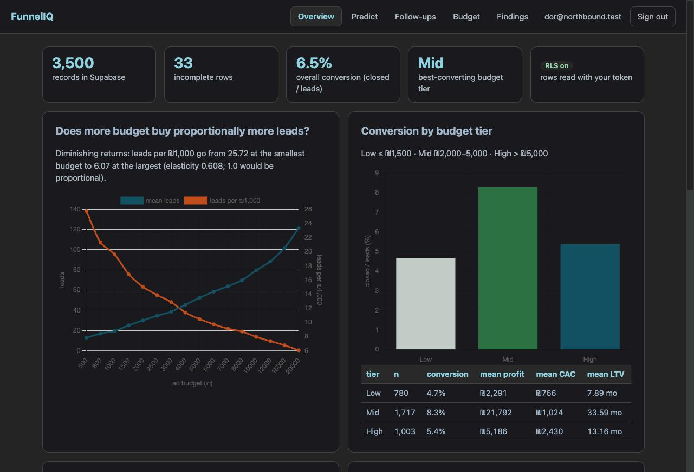
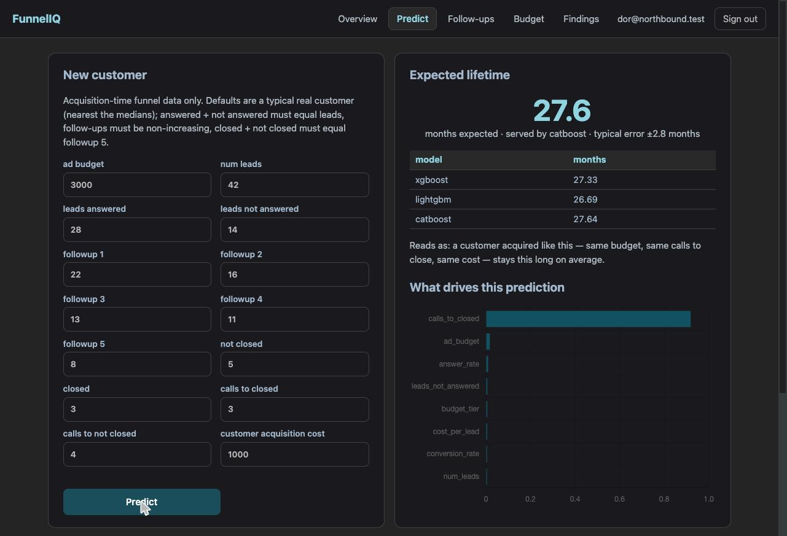
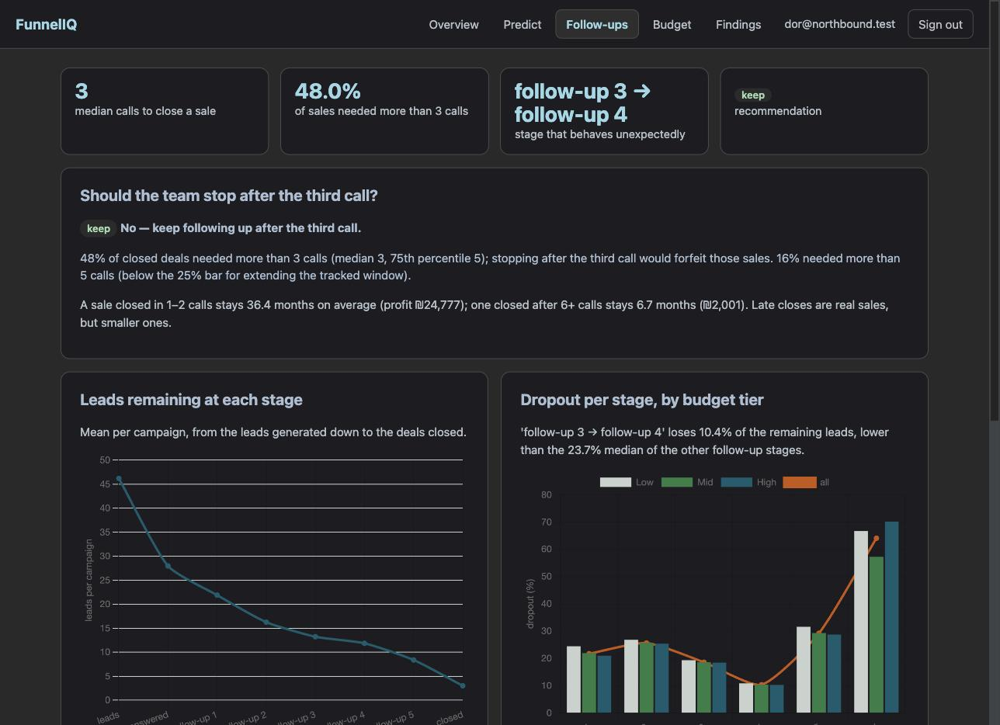
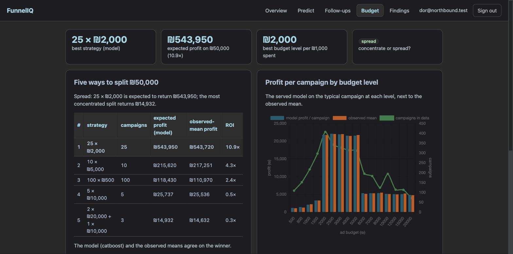

M8: הפרויקט סגור ומסור
שמונה תחנות, שש חבילות אנליטיות, אתר חי מאחורי לוגין. הדוח הזה מסכם מה נבנה, מה הנתונים אמרו למייסד של Northbound, מה תוקן בסיבוב הליטוש האחרון, ומה נשאר במכוון בחוץ. הוא נכתב לצד README באנגלית לזר, ותקציר מנהלים בראש docs/REPORT.md.
בשפה פשוטה: מה הנתונים אמרו למייסד
- הדאטה נקי ועקבי. 33 שורות בלי תוצאה, ולא ממציאים להן ערך. תקציב גדול קונה פחות לידים לשקל (גמישות 0.61), והקמפיינים הבינוניים (₪2,000–5,000) ממירים הכי טוב ומרוויחים פי 4 מהגדולים.
- כמה זמן לקוח יישאר אפשר לדעת ביום החתימה (R² 0.95, ±2.8 חודשים). המנוף: כמה שיחות לקח לסגור אותו.
- מי יקנה עוד: המודל מגיע ל-AUC 0.80, אבל ללקוחות קיימים כלל פשוט ("ותק מעל 12, עלות רכישה מתחת ל-2,000") טוב באותה מידה. כלל לקיימים, מודל לחדשים.
- לקוחות-העל הם 17% מהלקוחות ו-34% מהרווח, וזולים יותר להשגה. כמעט כולם Mid ונסגרו בשתי שיחות: לזהות ביום החתימה.
- לא להפסיק אחרי השיחה השלישית: 48% מהמכירות דרשו יותר. מי שעדיין מדבר אחרי שלוש הוא ליד רציני, אבל סגירה מאוחרת היא חשבון קטן.
- לפזר את ₪50,000 על קמפיינים בינוניים: 25 × ₪2,000 צפוי להחזיר ₪544k מול ₪15k לשני קמפיינים גדולים. בתנאי שהצוות יכול להריץ 25.
מה נעשה בתחנה הזו
- README לזר: מה הכלי עונה (עם המספרים), ארכיטקטורה, התקנה, נתונים ואימון מחדש, צילומים, מודל האבטחה, מפת הריפו, קרדיטים.
- תקציר מנהלים בראש
docs/REPORT.md: שש תשובות, כל מספר נוצר מקוד. - אזהרת "רחוק מנתוני האימון" (הערה מסבב הבדיקות אחרי M3):
ml/stats.pyשומר ממוצע/סטיית תקן/טווח של 14 פיצ'רי המשפך על 3,163 לקוחות האימון; כל תחזית ותק מחזירהnovelty(ה-z הגדול ביותר, הפיצ'ר, ערכים מחוץ לטווח), ולשונית Predict מציגה אזהרה כתומה מעל 3 סטיות תקן. משפך של אפסים ו-"₪800 עם 42 לידים" מזהירים עכשיו. - מטמון static: אחרי הפריסה של M7 הדפדפן המשיך להגיש את dashboard.html הישן.
/static/*שולח עכשיוCache-Control: no-cache. scripts/train_all.pyמאמן הכול מחדש ומייצר את FINDINGS, REPORT §P5/§P6 וסטטיסטיקות הקלט בסדר התלויות.docs/STRANGER_TEST.mdמתעד את מבחן הזר.- שער M8 מריץ מחדש את כל בדיקות ה-offline של M0–M7 (כולן עוברות), ואז README, REPORT, לוג סגור, דוחות M0–M8, סטטיסטיקות קלט, מבחן הזר, ו-/health חי.
מבחן הזר
פרופיל דפדפן נקי ← לוגין ← Overview ← תחזית (כולל אזהרת חריגות והודעת ולידציה) ← Follow-ups ← Budget (הבונה נעול על סכום שגוי, מדמה על 50,000) ← Findings ← יציאה. התוצאה המלאה, שלב-שלב, ב-docs/STRANGER_TEST.md: PASS.
המסע בצילומים






לקחים שנשמרו (ב-CLAUDE.md וב-PROJECT_LOG)
- אותות הכשל שנכתבו בתוכנית שווים את הזמן: שניים מהם התממשו (מלכודת "הקמפיין החציוני" ב-M7, ברירות מחדל שמפרות את זהות המשפך ב-M3) והשער תפס אותם.
- השוואה הוגנת מודל-מול-כלל דורשת לכוונן ולמדוד את הכלל על אותם folds (M4). התוצאה הייתה לא מחמיאה למודל, ודווחה כמו שהיא.
- Chart.js על canvas שנוצר בלשונית מוסתרת דורש resize + update כשהלשונית נפתחת (M6).
- Supabase: עורך ה-SQL מריץ רק את הקטע המסומן (M1). Railway: דומיינים גלובליים, להעתיק מפאנל Networking (M0); Railpack צריך start command מפורש ו-libgomp1 (M1, M3).
- תהליך: branch + שער + דוח עברי + Obsidian + PR לכל תחנה. הכללים חיים ב-
CLAUDE.mdכדי שכל סשן מתחיל מאותו מקום.
מה נשאר בחוץ, במכוון
- M9 (React): אופציונלי בתוכנית; הדשבורד הוואנילי מכסה את הברייף וה-API לא היה משתנה. ניתוח כדאיות, מה ישתנה בממשק והערכת שעות:
docs/notes/REACT_HE.html. - הקלטת דמו של 3–5 דקות: אופציונלי, נשאר לדור.
- הדאטה תרגולי: ה-R² של 0.95 ומדרגת הרווח לפי tier הם תכונות של הסט הזה. בייצור מאמנים מחדש מקמפיינים אמיתיים לפני שסומכים על החלוקה. הכל כתוב ב-REPORT.
תוצאת השער
- עבר · pytest ירוק (91 בדיקות).
- עבר · ruff נקי.
- עבר · אין סודות ב-git.
- עבר · כל בדיקות ה-offline של M0–M7 עדיין עוברות.
- עבר · README שלם (תשובות, ארכיטקטורה, התקנה, אימון מחדש, צילומים, אבטחה).
- עבר · REPORT.md: תקציר מנהלים + P2–P6.
- עבר · PROJECT_LOG סגור; דוחות עבריים M0–M8 קיימים.
- עבר · input_stats.json לאזהרת החריגות (14 פיצ'רים, 3,163 לקוחות).
- עבר · מבחן הזר מתועד כ-PASS.
- עבר ·
/healthחי מחזיר 200.
Definition of Done (PLAN §8)
ריפו ציבורי עם README, schema.sql, תג CI ירוק ו-23 PRs ממוזגים ✓ · URL חי שמחזיר 200, שורד restart ונפרס ב-push ✓ · לוגין: אורח רואה רק את דף הכניסה, יציאה מנקה את ה-session ✓ · RLS מוכח: anon 0 שורות, JWT 3,500 ✓ · מפתח ה-service לא ב-Railway ולא בהיסטוריה ✓ · loader אידמפוטנטי, 3,500 שורות ✓ · P1–P6 לפי הדרישות, כולן חיות ✓ · REPORT, PROJECT_LOG ואובסידיאן שלמים ✓ · מבחן הזר עבר ✓